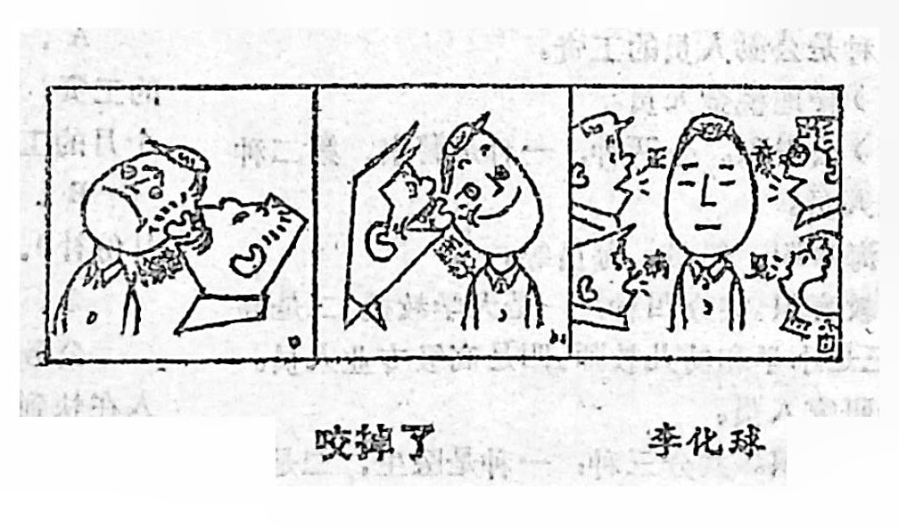

李化球 《人事》1986年第2期（总第5期），第38页
咬掉了
Bitten Off
- Text in the drawing
- 正 / 确 / 意 / 见 (panel 3); a label on the biting figure in panels 1–2 (illegible)
Correct / opinions (panel 3); the labels in panels 1–2 are illegible - Description
- Three panels. In the first two, a labeled figure bites at a man's ears. In the third, a man with no ears stands calm, eyes closed, while mouths around him call out 正、确、意、见, “correct opinions,” which he can no longer hear.
- Note
- The label on the biting figure is not legible in the scan, so what does the biting (flattery, gossip or something else) cannot be confirmed. Whatever it is leaves the man deaf to correct opinions.
- Artist
- Li Huaqiu 李化球
- Published in
- 《人事》1986年第2期（总第5期）, p. 38
- Themes
- Bureaucratism

Cite
Li Huaqiu, “咬掉了” [Bitten Off], Renshi (Personnel) 《人事》, 1986, no. 2, p. 38.